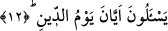

gözlerimden yaşlar aktı. Daha sonra gözlerimi silip açtığımda ne genci, ne de sarayı
görebildim. Kaçırdığım bu fırsata üzülüp durdum. Bu olaydan sonra da ibâdete
başladım.
12. Cezâ gününün ne zaman olduğunu sorarlar.
Kâfirler “cezâ günü ne zaman?” diye sorarlar. Burada
(yevm) kelimesinin muzafı
düşürülüp, muzafun ileyh onun yerine konulmuştur. Zira zarf-ı zamanın bir hades (fiili)
dışındaki bir şeye haber olarak gelmesi vârid değildir. Bu âyette ise bununla
“zaman”dan haber verilmektedir.
“Cezâ gününün vukûu ne zamandır?” denilmek istenmiştir. Aslında kâfirler, bu
sözleriyle gerçekten cezâ gününün zamanını öğrenmeyi talep etmemişler, aksine
kıyâmetle alay ederek onun çabucak gelmesini istemişlerdir.
13. O gün onlar ateşe sokulacaklardır.
Bu cümle önceki âyetteki “cezâ günü ne zaman olacak?” sorusunun cevabıdır. Âyetin
başındaki
(yevm) kelimesi, sualin kendisine delâlet ettiği gizli bir fiil yâni
(yaka’u) fiiliyle mansûb kılınmıştır. Bu takdire göre mânâ şöyledir: “O gün, onların ateş
üzerinde yanmaları ve o ateş içerisinde azap çekmeleri vâkî olacaktır.” Fitne, altın gibi
herhangi bir madeni tortusundan ayırmak için ateşte eritmektir. “Bir şeyi fitneye
uğratmak” demek, “özü ortaya çıkması için ateşte yakmak” demektir. Kâfirin her tarafı
necis olduğuna göre onun bütün bedeni cehennemde yanacaktır.
14. Azabınızı tadın! Acele gelmesini beklediğiniz şey budur işte! (denir.)
Onlara cehennemde azap edilirken cehennem melekleri (zebânileri) tarafından: “Tadın
fesadınızın cezâsını!” veya “tadın yalanlamanızın cezâsını!” denilecek. Yâni onlara
“dünyadaki fitne ve fesâdınızın âkıbetini görün” anlamında cümleler sarfedilecek.
Nitekim bir başka âyette: “Sonra onların fitneleri (yani kâfir olarak yaşayıp
ölmelerinin âkıbeti) «Rabbimiz Allah’a yemin olsun ki, biz O’na asla ortak falan
koşmuş değiliz» demekten başka bir şey olmayacak” (el-En’am 6/23) buyrulur.